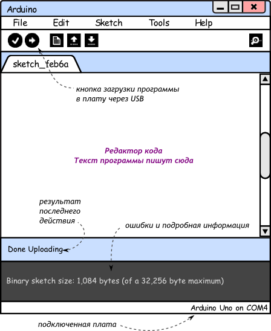

Начало работы с Arduino
-
Если у вас Windows и Arduino IDE из zip-файла, установите драйверы из папки drivers
Подключите Arduino к компьютеру через USB
Запустите Arduino IDE
В «Tools → Board» выберите модель вашей платы
В «Tools → Serial Port» выберите порт, куда она подключена
Пишите программу
Жмите «Upload» на панели инструментов для прошивки платы!
Перепрошивать плату можно сколько угодно раз. Программа сохраняется
после обесточивания платы.
Внешний вид Arduino IDE
